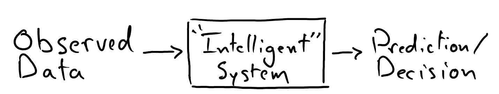
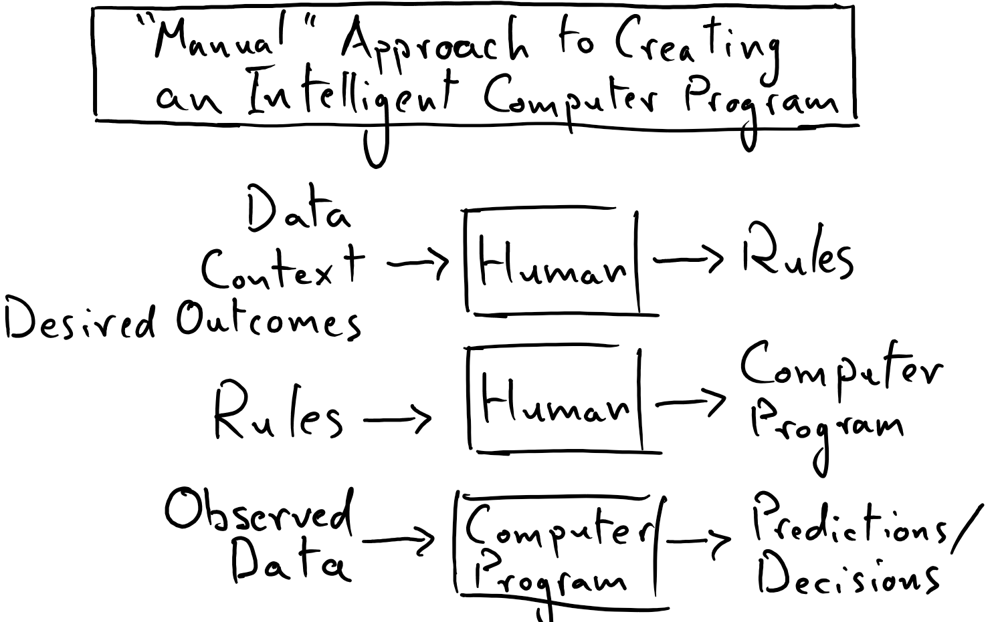

A Brief Introduction to Machine Learning¶
An essential element of intelligence, as we recognize it in ourselves and in other animals, is the ability to observe and to make predictions or decisions based off those observations. Indeed, the members of STEM fields align in their quest to find rules, laws, and relationships that permit us to systematically transform observations into reliable predictions or useful decisions.

To successfully distill such a pattern in a way that can be leveraged consistently is to acquire a certain amount of wisdom; to do so feels like obtaining a nugget of truth, or that some amount of chaos has been turned into order. Or, it might just mean that you can get a computer to tell the difference between cats and dogs in pictures.
Practitioners of machine learning (ML) strive to create computer programs that can distill meaningful patterns or rules from observations (i.e. data – to put in a less anthropomorphic way). Conventional computer programs have static rules codified in them by humans, which permit the computer to transform input data into useful output data in a systematic way. Thus, humans have traditionally been responsible for figuring out the rules that get used by computer programs.

For example, in a “classical” chess computer program (e.g. Stockfish), humans were responsible for designing and encoding the search patterns, types of analyses, and strategies that the chess-playing computer would rotely follow in order to try to win in a chess game. In this classical computer program, human intuition and expertise in chess are distilled into the computer program and are amplified by the computational power of the machine.
By contrast, the goal of a ML algorithm is for the machine to arrive at such rules by learning from both the data and the predictions that we would like our model to make about the data (here the term “rules” is to be taken in a very broad sense — it is more correct to say that the algorithm will arrive at a “mathematical description” of patterns that are pertinent to the problem at hand).

Extending the chess analogy: a machine learning algorithm might learn chess strategy – for itself – by processing games played by chess grand masters, or it might even learn winning strategies simply by playing and “studying” (many) games against itself. Here, humans didn’t need to know how to write a winning chess algorithm, rather they needed to design a system by which a machine had the capacity and objective to learn how to win at chess.
While a purely academic or even philosophical interest could lead one to design an algorithm capable of learning, a pragmatic thrust of ML is the insight that machines may be able to learn solutions to problems that are superior to any solution that we know how to construct by hand. Indeed, this is certainly proving to be the case in fields like computer vision, natural language processing, and game artificial intelligence. AlphaZero is an example of a machine learning algorithm capable of enabling machines to learn to play chess, shogi, and the game Go at elite levels, such that human experts and classical algorithms are defeated by the strategies learned by AlphaGo.
Despite all of this fanciful discussion, we must note that, in practice, a typical ML application will be highly limited in the ways it “learns” – it will not formulate its own hypotheses to be tested, nor will it query the Internet to discover new information; rather, we will see that “learning” is often used to describe processes of rote numerical optimization. It is useful for us to quickly ground ourselves in this reality: the typical ML application is a relatively simple computer program that encapsulates perhaps-sophisticated-but-still-familiar mathematics, which were put there by humans. To heed these considerations will help keep us from assuming that machine learning is a discipline so exotic and advanced that we, the wary students of this course, could never hope to participate in it — this is certainly not the case!
There are two major topics that we will be discussing in this module:
What it looks like for a model to learn
The process and challenge of designing a mathematical model that is suitable for learning fruitful patterns from data
These discussions will lead us down a road towards the fundamentals of neural networks and computer vision applications that are driven by deep learning.
We will start off by tackling a simple problem: using a single-variable linear model to describe the relationship between height and wingspan in basketball players. This approach to modeling is known as linear regression; while it is a stretch to categorize this as a machine learning algorithm, it will introduce us to all of the essential concepts needed for understanding the procedure of supervised learning nonetheless.